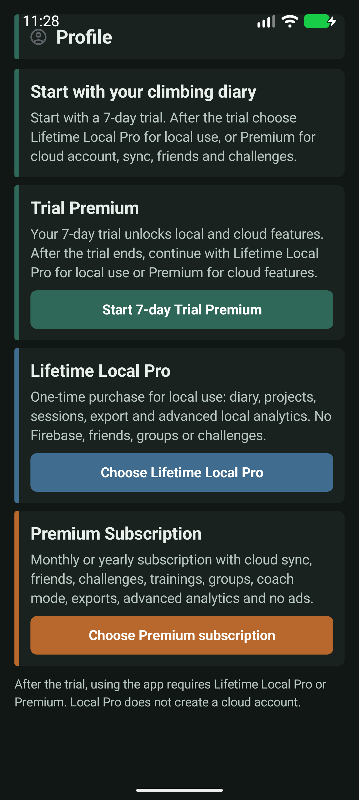

Utwórz konto
W Profilu wybierz Utwórz konto, podaj e-mail i hasło, a następnie potwierdź adres przez link wysłany na pocztę.
Podręcznik użytkownika · wersja testowa
Przewodnik po Climbing Diary — od pierwszego uruchomienia, przez dziennik i sesje, aż po analizy, znajomych, wyzwania i ochronę danych.
Testy zamknięte: wygląd drobnych elementów może jeszcze ulec zmianie. Funkcje oznaczone Premium wymagają aktywnego Trial Premium lub Premium.
Szybka nawigacja
Pierwsze uruchomienie
Po otwarciu aplikacji przejdź do Profilu. Climbing Diary rozdziela pracę lokalną od funkcji chmurowych, dzięki czemu możesz wybrać wariant dopasowany do siebie.
W trakcie testów dostępność zakupu może zależeć od konfiguracji Google Play. Nie podawaj danych karty poza standardowym ekranem Google Play.

W Profilu wybierz Utwórz konto, podaj e-mail i hasło, a następnie potwierdź adres przez link wysłany na pocztę.
Wybierz Mam już konto, wpisz e-mail i hasło. To samo konto wykorzystuj na każdym urządzeniu.
Na ekranie logowania użyj Resetuj hasło. Podaj e-mail, a otrzymasz wiadomość do ustawienia nowego hasła.
Twój zapis wspinania

Załączniki pozostają lokalnie w telefonie. Nie są obecnie wysyłane do Firebase.
Oznacz wpis jako ukończony, próbę albo projekt. Status pomaga później filtrować dziennik i budować analizy.
W Dzienniku wyszukasz wpis po nazwie, a filtry pozwalają zawęzić wyniki według wyceny, miejsca, typu aktywności i statusu.
Otwórz wpis, aby go poprawić, dodać informacje lub bezpiecznie usunąć. Usunięcie jest potwierdzane.
W narzędziach Dziennika wybierz plik CSV lub Excel. Możesz dopasować kolumny przed zapisaniem danych.
Wyeksportuj wybrane wpisy do PDF lub Excela. Przed eksportem ustaw zakres dat, wycenę, aktywność i status.
Jeżeli przy wpisie zapisano lokalizację, użyj przycisku Mapy, aby zobaczyć wskazane miejsce.
Świadomy trening
Sesje
Ustaw miejsce i cel treningowy tylko raz. Podczas aktywnej sesji zapisuj próby, ukończone drogi i projekty bez ponownego wpisywania daty.
Projekty
Każdy wpis oznaczony jako projekt trafia do listy Projektów. Zapisuj betę i kolejne próby, a po przejściu oznacz drogę jako ukończoną.
Analizy Pro
Analizy zbierają dane z Dziennika i sesji, aby wskazać nie tylko rekord, lecz także regularność i strukturę treningu.
Razem łatwiej
W Profilu wyszukaj zarejestrowaną osobę po e-mailu, nazwie lub telefonie. Możesz też użyć kodu QR albo wybrać pojedynczy kontakt z telefonu.
Po akceptacji zaproszenia utwórz grupę znajomych, np. „Sekcja” lub „Wyjazd Jura”, aby szybciej wybierać uczestników.
Ustal typ celu, daty oraz uczestników. Zaproszone osoby mogą zaakceptować wyzwanie i obserwować wspólny postęp.
Wyślij zaproszenie z terminem, miejscem i opisem. Zaakceptowany trening możesz dodać jako przypomnienie do kalendarza telefonu.
Utwórz współdzieloną listę rejonu, uczestników oraz dróg i projektów do spróbowania. Właściciel może ją później edytować lub usunąć.
Wyszukaj drogę, projekt, znajomego, grupę, trening albo wyzwanie z jednego miejsca.
Ustawienia i bezpieczeństwo
W Profilu ustaw język aplikacji: polski, angielski, niemiecki, hiszpański albo ustawienie systemowe. Możesz też wybrać motyw jasny, ciemny lub systemowy.
Przy aktywnym Premium aplikacja synchronizuje dane konta z chmurą. W Dzienniku sprawdzisz status: zsynchronizowano, oczekuje lub błąd. Wpisy zapisane bez internetu są wysyłane po odzyskaniu połączenia.
W Profilu zapisuj wyniki testów sportowych. Analizy wykorzystują je przy ocenie gotowości do wybranego celu treningowego.
Lokalizacja służy wyłącznie do zapisu miejsca drogi, gdy ją wybierzesz. Wybór kontaktu korzysta z systemowego selektora i nie odczytuje całej książki adresowej.
W aplikacji przejdź do Profilu → Pomoc → usunięcie konta. Możesz też zgłosić żądanie przez stronę usunięcia konta. Anulowanie subskrypcji w Google Play nie usuwa automatycznie konta.
Pomoc podczas testów
Kontakt
To adres do opinii testerów i zgłoszeń błędów. W tytule wiadomości wpisz „Climbing Diary — błąd” albo „Climbing Diary — sugestia”.
Napisz wiadomość